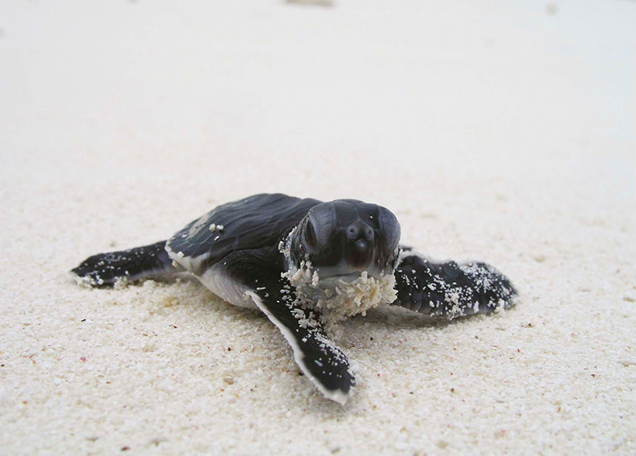

Island reef sanctuary & windward nesting beaches
Cozumel Island, located 19 kilometers off the Yucatán coast, is surrounded by some of the healthiest coral reefs in the Caribbean and hosts remote nesting beaches on its eastern, windward, shore. While the island's western dive sites draw millions of tourists, the Marine Turtle Foundation's Cozumel conservatory focuses on the less-visible side of turtle conservation: protecting open-water foraging habitat, monitoring reef health, and safeguarding the wild beaches where loggerhead and green turtles nest each summer.
Underwater monitoring & windward coast patrols
Loggerhead, green & hawksbill sea turtles
60+ divers, rangers & island volunteers
Cozumel's conservatory operates two interconnected programs. The reef program trains dive volunteers to conduct standardized surveys of turtle sightings, coral cover, and sponge abundance at established transects within the Cozumel Reefs National Marine Park. Hawksbill turtles are regularly spotted feeding on sponges along the wall dives at Palancar and Columbia Reef. Photo-identification of individual hawksbills helps researchers estimate population size and track residency patterns.

Cozumel Island is surrounded by some of the healthiest coral reefs in the Caribbean, and those reefs support turtles at every stage of life. Hawksbills feed on sponges that would otherwise compete with corals for space on the reef. Juvenile greens use shallow areas near the shore as they grow. Loggerheads pass through on migration. Our dive teams visit the same transects month after month so that changes in turtle abundance, coral cover, and reef health can be measured over time rather than guessed at.
Partner dive shops integrate conservation briefings into pre-dive orientations, reaching an estimated 30,000 divers annually with messages about turtle-friendly diving practices, proper buoyancy control near reef structures, and how to report tagged or injured animals. Cozumel's economy depends on the reef looking healthy. Turtle conservation and dive tourism share the same interest in keeping these waters intact.
On the island's eastern shore, a small team of rangers patrols nesting beaches accessible only by four-wheel drive. These undeveloped stretches of sand receive fewer nests than mainland sites, but each one is critical for maintaining genetic diversity in the regional turtle population. Nests are protected in situ with predator exclusion cages, and hatchling emergence is documented to assess survival rates.
The windward coast faces the open Caribbean and takes the brunt of storms that reshape the beach from year to year. After major weather events, our teams assess nest loss, rebuild protective structures, and document shoreline changes so that patrol routes and hatchery locations can be adjusted for the next season.
The conservatory also addresses marine debris, a major threat in one of the world's most popular dive destinations. Quarterly underwater cleanup dives remove fishing line, plastic, and ghost nets from reef structures. Cozumel sits across the channel from the Riviera Maya mainland, and turtles move freely between the island and nesting beaches at Tulum, Xcacel, and Playa del Carmen. Protecting Cozumel's waters supports conservation across the entire Riviera Maya corridor.